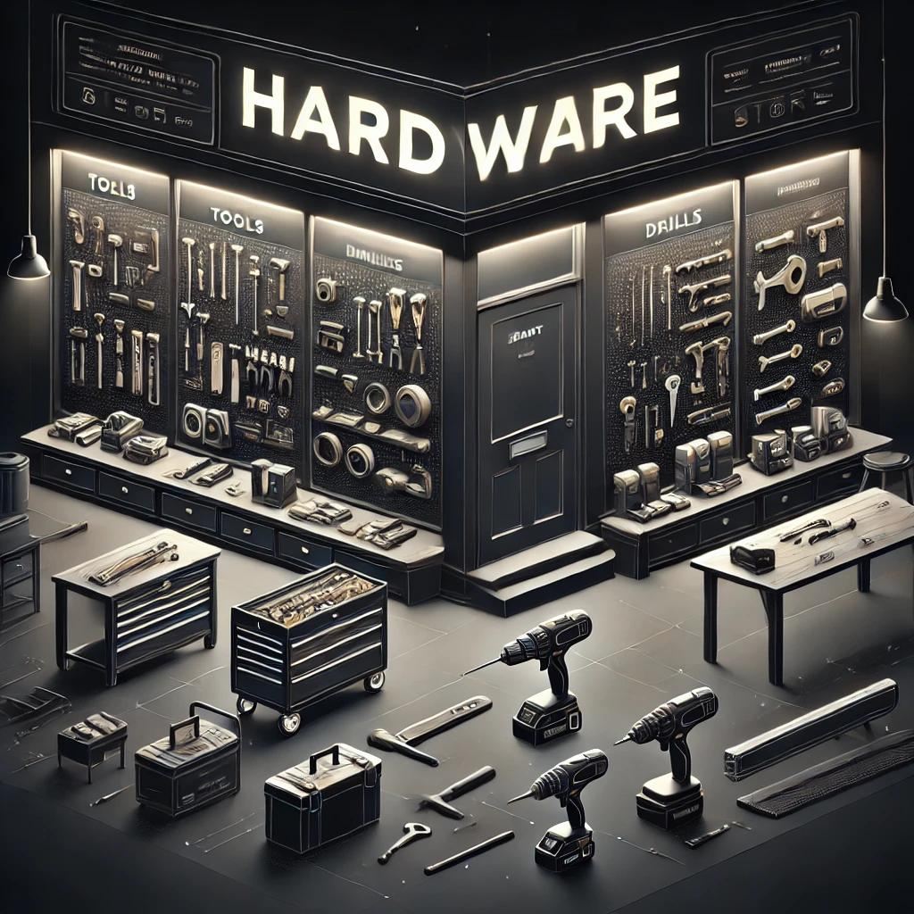
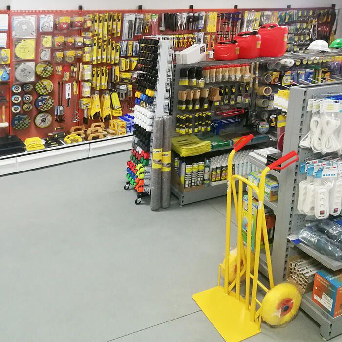

Nosotros

En Ferreteria Tiffii, ofrecemos materiales, herramientas y soluciones de alta calidad para la construcción, remodelación y mantenimiento. Nos enfocamos en brindar atención personalizada, asesoría técnica y productos de marcas reconocidas, convirtiéndonos en un aliado confiable para profesionales y particulares. Comprometidos con la innovación, la sostenibilidad y la excelencia, trabajamos para garantizar la satisfacción de nuestros clientes y contribuir al éxito de sus proyectos.

La idea de Ferreteria Tiffii nació en 2008, cuando Tifany Pineda, inspirado por su pasión por la construcción y el deseo de ayudar a su comunidad, decidió crear un lugar donde las personas pudieran encontrar herramientas, materiales y asesoría para llevar a cabo sus proyectos. Lo que comenzó como una pequeña tienda con atención cercana y personalizada rápidamente se convirtió en un referente gracias a su compromiso con la calidad y la satisfacción del cliente.

Misión Proveer materiales y herramientas de alta calidad que permitan a nuestros clientes, tanto profesionales como aficionados, llevar a cabo sus proyectos de construcción, remodelación y reparación. Nos enfocamos en brindar un servicio excepcional, asesoría técnica y soluciones personalizadas, con el compromiso de ser un aliado confiable en cada paso del camino.

Visión Ser reconocidos como la ferretería líder en la región, destacándonos por nuestra innovación, excelencia en el servicio y compromiso con la satisfacción del cliente. Aspiramos a convertirnos en un referente de confianza, ofreciendo productos sostenibles y contribuyendo al desarrollo de nuestra comunidad.

Valores 1. Calidad: Garantizamos productos y servicios que cumplen con los más altos estándares. 2. Compromiso: Estamos dedicados a satisfacer las necesidades de nuestros clientes de manera responsable y eficiente. 3. Innovación: Adoptamos nuevas tecnologías y soluciones para mejorar la experiencia de nuestros clientes.